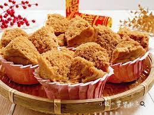

班級:餐三乙 姓名洪歆雅 學號: 91034230
料理陳列展示
發糕
材料：
- 糯米粉（300克）
- 糖（100克，可根據個人口味調整）
<
- 水（約400毫升，可根據需要調整）
- 泡打粉（1茶匙）
- 植物油（少許，用於刷模具）
- 蒸籠或發酵爐
步驟：
- 將糯米粉、糖和泡打粉混合在一個大碗中。
- 逐漸加入水，同時攪拌，直到形成均勻的糊狀物。
- 將鍋中的水煮沸，將裝有發糕糊的容器放入蒸籠中，用植物油刷一層薄薄的油在容器內。
- 將蓋好的蒸籠放在沸水上，用中火蒸約20-25分鐘，或直到發糕變得透明、有彈性。
- 取出蒸好的發糕，稍微放涼後切成小塊即可。
- 發糕可以單獨享用，也可以搭配其他食材一同食用。

典故
相傳灶爐蒸年粿時，都會有「年糕神」看護，而年粿發不發，關係著來年一年的運途，
主婦們都嚴禁小孩們在灶火旁嬉戲、玩鬧，甚至講出「壞了」、「去了」等不吉利的話，
以免「年糕神」發怒，致年糕製作功虧一簣，不但未來一年運勢「發不起來」，又沒口福